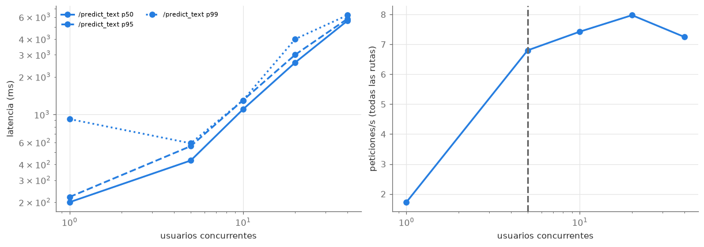

Despliegue: API, contenedor, integración continua y registro de modelos#
En este capítulo describimos cómo los dos modelos elegidos llegan a producción y qué garantías comprobamos en el camino: paridad numérica tras la exportación, efecto de la cuantización, regresión sobre un conjunto dorado, comportamiento bajo carga y trazabilidad de cada versión. Los resultados los generan los trabajos mlops_export_seg, mlops_export_text, mlops_bert_quant y mlops_load de la cola.
import pandas as pd
import matplotlib.pyplot as plt
from IPython.display import Markdown, display
from project.book_utils import CAT, MUTED, exists, need, style
style()
pd.set_option("display.precision", 3)
md = lambda t: display(Markdown(t)) # noqa: E731
Arquitectura#
results/ (pickles y pesos)
│ scripts/mlops.py export-seg | export-text (paridad, cuantización, conjunto dorado)
▼
models/serving/{text,seg}/ model.onnx o model.pkl + meta.json + golden.json ──► MLflow: registro de versiones
│ docker build (multi-etapa, usuario no root) (staging / production / previous)
▼
API FastAPI /health /ready /model_info /metrics /metrics/prometheus /predict_text /predict_image
│ PRED_LOG (JSONL con señales agregadas, sin textos ni imágenes)
▼
Monitoreo de deriva por ventanas (capítulo 31)
Ruta |
Entrada |
Salida |
Validación |
|---|---|---|---|
|
— |
estado del proceso |
— |
|
— |
200 si los dos modelos cargaron; 503 con el error si no |
— |
|
— |
nombre, versión, posproceso y métricas de validación de cada modelo |
— |
|
— |
contadores y latencias p50/p95/p99 por ruta, en JSON |
— |
|
— |
las mismas señales en el formato de texto de Prometheus, para un scrape y paneles de Grafana |
— |
|
JSON |
etiqueta, probabilidades de las k primeras clases, versión, latencia |
texto de 1 a 100 000 caracteres; |
|
archivo PNG/JPEG/TIFF |
número de instancias y máscaras en RLE (convención de Kaggle) |
lado entre 32 y 2048 px; se convierte a escala de grises |
Cada respuesta lleva un request_id que también aparece en los registros JSON del servidor. Con la variable PRED_LOG activa, la API escribe por petición solo señales agregadas (longitud, etiqueta y confianza para texto; intensidad, fracción de primer plano y número de instancias para imágenes): no guarda el texto ni la imagen, porque los currículos contienen datos personales.
Exportación, paridad y cuantización#
Segmentación. Exportamos U-Net++ (la semilla con mejor AP de validación) a ONNX y comparamos sus salidas con las del modelo de Keras en las 92 imágenes de validación. La cuantización estática int8 (formato QDQ, calibración con 32 imágenes de entrenamiento) solo se sirve si el AP cae como máximo 0.01 y la latencia baja.
if exists("mlops/export_seg/export_seg.pkl"):
ex = need("mlops/export_seg/export_seg.pkl")
par = ex["parity"]
_mx = par.max_abs_diff.max()
md(f"Modelo exportado: {({'unetpp_main': 'U-Net++', 'maskrcnn_main': 'Mask R-CNN'}).get(ex['model'], ex['model'])}, semilla {ex['seed']}. "
f"Diferencia máxima absoluta entre probabilidades de Keras y ONNX: {_mx:.2e}, "
+ ("dentro de la tolerancia declarada de 10⁻³. " if _mx <= 1e-3 else
f"por encima de la tolerancia declarada de 10⁻³ en {int((par.max_abs_diff > 1e-3).sum())} de {len(par)} imágenes; la diferencia "
f"no cambia el resultado del post-proceso de forma apreciable: el AP medio difiere en {abs(par.ap_keras.mean() - par.ap_onnx.mean()):.4f}. ")
+ f"AP de validación: Keras {par.ap_keras.mean():.4f}, ONNX {par.ap_onnx.mean():.4f}. "
f"Latencia ONNX en CPU por imagen: p50 {1e3 * par.lat_onnx_s.median():.0f} ms.")
q = ex["quant"]
if "ap_drop" in q:
md(f"Cuantización int8: AP {q['ap']:.4f} (caída {q['ap_drop']:+.4f}), latencia p50 {1e3 * q['lat_p50']:.0f} ms, tamaño {q['size_mb']:.1f} MB. "
f"**{'Se sirve la versión int8.' if ex['served_int8'] else 'Se sirve la versión fp32'}**"
+ ("" if ex["served_int8"] else " porque la versión int8 no cumple a la vez caída ≤ 0.01 y menor latencia."))
else:
md(f"La cuantización estática falló: `{q.get('error', '')[:200]}`. Se sirve la versión fp32.")
md(f"Tamaño del modelo servido: {ex['onnx_mb']:.1f} MB. AP del conjunto dorado (6 imágenes): {ex['golden_ap']:.3f}.")
else:
md("La exportación de segmentación no terminó (`python scripts/mlops.py export-seg`).")
Modelo exportado: U-Net++, semilla 2. Diferencia máxima absoluta entre probabilidades de Keras y ONNX: 2.21e-03, por encima de la tolerancia declarada de 10⁻³ en 91 de 92 imágenes; la diferencia no cambia el resultado del post-proceso de forma apreciable: el AP medio difiere en 0.0002. AP de validación: Keras 0.2300, ONNX 0.2298. Latencia ONNX en CPU por imagen: p50 1947 ms.
La cuantización estática falló: Incomplete symbolic shape inference. Se sirve la versión fp32.
Tamaño del modelo servido: 18.2 MB. AP del conjunto dorado (6 imágenes): 0.125.
Texto. La regla de elección se fijó antes de ver test: servimos DistilBERT solo si su F1 macro de validación supera la de TF-IDF + RL en más de δ = 0.02, porque DistilBERT cuesta más en latencia y memoria (medición en el capítulo Eficiencia, riesgo en reclutamiento y análisis crítico del clasificador de texto).
if exists("mlops/export_text/export_text.pkl"):
et = need("mlops/export_text/export_text.pkl")
md(f"F1 macro de validación: TF-IDF + RL {et['f1_val_lr']:.3f}, DistilBERT "
+ (f"{et['f1_val_bert']:.3f}" if et.get("f1_val_bert") == et.get("f1_val_bert") and et.get("f1_val_bert") is not None else "—")
+ f". **Modelo servido: {({'distilbert': 'DistilBERT', 'tfidf_lr': 'TF-IDF + RL'}).get(et['choice'], et['choice'])}.** F1 macro del modelo servido en validación: {et['val_f1_served']:.3f}; latencia en CPU por "
f"documento p50 {et['lat_p50_ms']:.1f} ms, p95 {et['lat_p95_ms']:.1f} ms; exactitud en el conjunto dorado (40 textos): {et['golden_accuracy']:.3f}.")
if "parity_max_abs" in et:
md(f"Paridad entre el *pipeline* servido y las probabilidades del entrenamiento: diferencia máxima {et['parity_max_abs']:.2e}.")
else:
md("La exportación de texto no terminó (`python scripts/mlops.py export-text`).")
if exists("mlops/bert_quant/bert_quant.pkl"):
bq = need("mlops/bert_quant/bert_quant.pkl")["table"]
display(bq.rename(columns={"variant": "DistilBERT", "f1_val": "F1 macro (150 docs. val)", "lat_p50_ms": "p50 (ms)", "lat_p95_ms": "p95 (ms)",
"size_mb": "tamaño (MB)", "agreement_with_fp32": "acuerdo con fp32"}).style.hide(axis="index").format(precision=3, na_rep="—"))
F1 macro de validación: TF-IDF + RL 0.659, DistilBERT 0.774. Modelo servido: DistilBERT. F1 macro del modelo servido en validación: 0.776; latencia en CPU por documento p50 190.3 ms, p95 197.9 ms; exactitud en el conjunto dorado (40 textos): 0.850.
| DistilBERT | F1 macro (150 docs. val) | p50 (ms) | p95 (ms) | tamaño (MB) | acuerdo con fp32 |
|---|---|---|---|---|---|
| ONNX fp32 | 0.351 | 182.344 | 200.157 | 268.012 | — |
| ONNX int8 dinámico | 0.351 | 68.185 | 73.949 | 67.380 | 0.947 |
Prueba de carga#
Levantamos la API con un solo proceso de uvicorn en CPU y la sometimos a niveles crecientes de usuarios concurrentes con Locust (cada usuario espera entre 0.1 y 0.5 s entre peticiones; 80 % texto, 10 % imagen, 10 % /health). Definimos el punto de saturación como el primer nivel a partir del cual duplicar los usuarios aumenta el rendimiento menos de un 10 %.
if exists("mlops/load/load.pkl"):
ld = need("mlops/load/load.pkl")
S = ld["sweep"]
fig, axes = plt.subplots(1, 2, figsize=(11, 3.8))
for k, ep in enumerate(["/predict_text", "/predict_image"]):
g = S[S.endpoint == ep].set_index("users")
if len(g):
for q_, ls in (("p50_ms", "-"), ("p95_ms", "--"), ("p99_ms", ":")):
axes[0].plot(g.index, g[q_], ls, marker="o", color=CAT[k], label=f"{ep} {q_[:3]}")
axes[0].set(xscale="log", yscale="log", xlabel="usuarios concurrentes", ylabel="latencia (ms)"); axes[0].legend(fontsize=7, ncol=2)
agg = S[S.endpoint == "Aggregated"].set_index("users")
axes[1].plot(agg.index, agg.rps, "o-", color=CAT[0])
if ld["saturation_users"]:
axes[1].axvline(ld["saturation_users"], color=MUTED, ls="--")
axes[1].set(xscale="log", xlabel="usuarios concurrentes", ylabel="peticiones/s (todas las rutas)")
plt.show()
display(S[S.endpoint != "Aggregated"][["users", "endpoint", "requests", "failures", "rps", "p50_ms", "p95_ms", "p99_ms"]]
.rename(columns={"users": "usuarios", "endpoint": "ruta", "requests": "peticiones", "failures": "fallos", "rps": "peticiones/s"})
.style.hide(axis="index").format(precision=1))
if not (S.endpoint == "/predict_image").any():
md("La prueba de carga corrió antes de que el modelo de segmentación estuviera exportado, así que solo cubre la ruta de texto "
"y `/health`; la ruta de imágenes no tiene medición bajo carga.")
sat = ld["saturation_users"]
md(f"Punto de saturación: {sat} usuarios ({agg.rps[sat]:.1f} peticiones/s)." if sat else
f"No alcanzamos la saturación hasta {max(ld['levels'])} usuarios ({agg.rps.iloc[-1]:.1f} peticiones/s).")
display(ld["batching"].rename(columns={"model": "modelo", "mode": "modo", "docs_per_s": "elementos/s", "net_ms": "red (ms)",
"post_ms": "posproceso (ms)"}).style.hide(axis="index").format(precision=1, na_rep="—"))
bs = ld["batching"]
bs = bs[(bs.model == "segmentación") & bs.post_ms.notna()] if "post_ms" in bs else bs.iloc[0:0]
if len(bs):
r = bs.iloc[0]
md(f"En segmentación, la red ocupa {r.net_ms:.0f} ms y el posproceso por watershed {r.post_ms:.0f} ms por imagen (medianas en CPU): "
f"el posproceso es el {100 * r.post_ms / (r.net_ms + r.post_ms):.0f} % del tiempo y agrupar imágenes en lotes solo acelera la parte de la red.")
else:
md("La prueba de carga no terminó (`python scripts/mlops.py load`).")

| usuarios | ruta | peticiones | fallos | peticiones/s | p50_ms | p95_ms | p99_ms |
|---|---|---|---|---|---|---|---|
| 1 | /health | 10 | 0 | 0.2 | 3.0 | 6.0 | 6.0 |
| 1 | /predict_text | 59 | 0 | 1.5 | 200.0 | 220.0 | 920.0 |
| 5 | /health | 33 | 0 | 0.8 | 5.0 | 8.0 | 15.0 |
| 5 | /predict_text | 239 | 0 | 6.0 | 430.0 | 560.0 | 590.0 |
| 10 | /health | 30 | 0 | 0.8 | 10.0 | 20.0 | 27.0 |
| 10 | /predict_text | 267 | 0 | 6.7 | 1100.0 | 1300.0 | 1300.0 |
| 20 | /health | 41 | 0 | 1.0 | 12.0 | 36.0 | 150.0 |
| 20 | /predict_text | 278 | 0 | 7.0 | 2600.0 | 3000.0 | 4000.0 |
| 40 | /health | 34 | 0 | 0.8 | 11.0 | 250.0 | 380.0 |
| 40 | /predict_text | 256 | 0 | 6.4 | 5600.0 | 5800.0 | 6200.0 |
La prueba de carga corrió antes de que el modelo de segmentación estuviera exportado, así que solo cubre la ruta de texto y /health; la ruta de imágenes no tiene medición bajo carga.
Punto de saturación: 5 usuarios (6.8 peticiones/s).
| modelo | modo | elementos/s | error |
|---|---|---|---|
| texto | lote 1 | 5.3 | — |
| texto | lote 32 | 5.3 | — |
| segmentación | error | — | [Errno 2] No such file or directory: 'C:\\Users\\User\\Documents\\GitHub\\proyecto-integrador-dl\\models\\serving\\seg\\meta.json' |
La API no agrupa peticiones en lotes: cada petición se atiende sola. La tabla de lotes, medida fuera de la API, muestra cuánto rendimiento se ganaría agrupando textos. Con un solo worker, la ruta de imágenes bloquea al resto durante su cálculo: en producción la separaríamos en un servicio propio.
Integración continua#
El flujo de GitHub Actions (.github/workflows/ci.yml) ejecuta, en orden:
Etapa |
Herramienta |
Qué falla |
|---|---|---|
Estilo |
|
errores de estilo o código muerto |
Tipos |
|
inconsistencias de tipos |
Pruebas unitarias |
|
RLE ida y vuelta y fuera de rango, métricas con casos conocidos (Dice, IoU, AP, HD95, taxonomía de fusiones y divisiones), Holm, escalado de temperatura, cobertura conforme, PSI, escritura atómica, determinismo con semilla |
Esquema de la API |
|
esquema de respuesta, rechazo de entradas inválidas, latencia < 5 s por petición |
Datos |
|
esquema de Sartorius; ningún |
Regresión de modelo |
conjunto dorado |
AP o exactitud del modelo servido cae más de ε = 0.02 respecto del registrado |
Vulnerabilidades de dependencias |
|
dependencias de servicio con vulnerabilidades conocidas |
Imagen |
|
construcción multi-etapa |
Prueba de humo |
contenedor + |
|
Vulnerabilidades de la imagen |
Trivy |
CVE críticas o altas en la imagen |
Los datos de Kaggle no están en el repositorio, así que en GitHub las pruebas de datos se omiten y la prueba de humo usa modelos mínimos generados por scripts/make_smoke_models.py; en local, make test las ejecuta todas.
Trazabilidad: MLflow, DVC y tarjetas de modelo#
MLflow (
make track): vuelca todos los resultados deresults/a un almacén local en SQLite. Cada entrenamiento de segmentación es una corrida con su configuración y su curva de pérdida; cada búsqueda de hiperparámetros de NLP es una corrida madre con una corrida hija por trial. Los modelos servidos se registran como versiones con los aliasstaging,productionyprevious;python scripts/track_mlflow.py rollback textdevuelveproductiona la versión anterior.DVC (
dvc.yaml): declara las seis etapas demake reproduce(datos → particiones → entrenamiento → evaluación → análisis → Book) con sus dependencias, de modo quedvc reprosolo rehace lo que cambió. Los datos crudos se verifican por SHA-256 y los pesos no se duplican en la caché de DVC.Versión de cada modelo servido:
meta.jsonguarda el nombre, la semilla, el commit corto de git como versión, el SHA-256 de los datos y las métricas de validación, y/model_infolo expone.
Las tarjetas de modelo se generan desde los pickles con python scripts/model_cards.py.
Tarjeta de modelo: segmentación de instancias celulares#
Detalles del modelo#
Arquitectura: U-Net++ (codificador-decodificador con conexiones densas anidadas y supervisión profunda) con tres clases por píxel (fondo, interior, borde) y posproceso por watershed con h-máximos.
Entrenamiento: desde cero, Keras 3 con backend PyTorch, pérdida CE + Dice, AdamW con 2 épocas de calentamiento y decaimiento coseno, recortes de 256 px, aumentos geométricos, fotométricos y elásticos, early stopping en validación.
Versión servida: unetpp_main semilla 2, versión
386f56f, ONNX fp32.Posproceso congelado en validación:
{'t_fg': 0.6, 'h': 0.2, 'min_size': 30}.Autores: Anyely Sanjuan Benavides y Juan David Díaz Fernández (Universidad del Norte). Curso de Deep Learning, Dr. Lihki Rubio.
Licencia de los datos: reglas de la competencia Sartorius de Kaggle (uso no comercial y de investigación).
Uso previsto#
Segmentar células individuales en imágenes de contraste de fase de 520 × 704 px de las líneas SH-SY5Y, astrocitos y neuronas corticales, adquiridas con el mismo sistema que el conjunto de Sartorius, para conteo, morfometría o seguimiento en investigación.
Fuera de alcance: diagnóstico clínico; otras modalidades (fluorescencia, campo claro), otros microscopios o escalas sin validación local; tejidos; decisiones automáticas sin revisión de un experto.
Factores#
Tipo celular, densidad (número de instancias por imagen) y tamaño medio de las células. El desempeño se reporta por estrato.
Condiciones de adquisición: ruido, desenfoque, contraste, brillo, iluminación y compresión (pruebas de robustez).
Métricas#
AP@[.5:.95] en validación del modelo exportado: 0.230; paridad ONNX frente a Keras: diferencia máxima absoluta de probabilidad 2.21e-03.
Tamaño del ONNX servido: 18.2 MB; latencia ONNX en CPU (p50): 1947 ms por imagen.
Conjunto dorado (6 imágenes de validación, 2 por tipo): AP 0.125; la prueba de regresión falla si baja más de 0.02.
Test (n = 93 imágenes, media de 3 semillas): AP@[.5:.95] 0.214 [0.188, 0.240], PQ 0.439 [0.402, 0.476], Dice 0.746 [0.717, 0.771].
AP por tipo celular: astrocitos 0.077 [0.060, 0.093]; neuronas corticales 0.298 [0.264, 0.330]; SH-SY5Y 0.166 [0.148, 0.184].
Datos de entrenamiento y evaluación#
606 imágenes anotadas de Sartorius, partición 70/15/15 agrupada por
sample_idy estratificada por tipo celular (data/processed). Ficha de datos enreports/datasheets/sartorius.md.
Consideraciones éticas y limitaciones#
Las anotaciones de astrocitos son polígonos gruesos y contienen errores; el AP de ese tipo tiene un techo inferior a 1.
El desempeño fuera del microscopio y del protocolo de Sartorius es desconocido (ver LOCTO y perturbaciones en el Book).
Validez de las cifras: imágenes de test de la misma distribución que el entrenamiento; IC bootstrap sobre imágenes.
Monitoreo#
Con
PRED_LOGactivo, la API registra por imagen la intensidad media y su desviación estándar, el número de instancias y la fracción de primer plano (no guarda la imagen). Un cambio sostenido de esas distribuciones frente a validación dispara revisión (capítulo de monitoreo del Book).
Tarjeta de modelo: clasificación de currículos en 24 categorías#
Detalles del modelo#
Modelo servido: DistilBERT. Regla de elección fijada antes de ver test: DistilBERT si F1 val − F1 val(TF-IDF+RL) > δ = 0.02 (F1 macro de validación, media de las semillas finales: TF-IDF + RL 0.659; DistilBERT 0.774).
Versión:
c689eed.Autores: Anyely Sanjuan Benavides y Juan David Díaz Fernández (Universidad del Norte). Curso de Deep Learning, Dr. Lihki Rubio.
Uso previsto#
Sugerir la categoría profesional de un currículo en inglés como apoyo a una persona que organiza candidaturas. La API devuelve las probabilidades de las 24 clases para mostrar una lista corta.
Fuera de alcance: decidir automáticamente sobre personas (descartar, ordenar o rechazar candidatos sin revisión humana); currículos en otros idiomas; inferir atributos personales. En la Unión Europea, un sistema de selección de personal es de alto riesgo (Reglamento (UE) 2024/1689, anexo III, punto 4) y exige supervisión humana y gestión de riesgos.
Métricas#
F1 macro en validación del modelo exportado (semilla 0): 0.776; latencia por documento en CPU p50 190.3 ms y p95 197.9 ms; exactitud en el conjunto dorado (40 textos de validación) 0.850.
TF-IDF + RL en test (373 documentos, 5 semillas): F1 macro 0.660 ± 0.000, voto de semillas 0.660 [0.605, 0.700]; ECE 0.069.
DistilBERT en test (373 documentos, 5 semillas): F1 macro 0.774 ± 0.012, voto de semillas 0.782 [0.746, 0.809]; ECE 0.088.
Contrafactual de género (TF-IDF + RL): la predicción cambia en 0 de 373 currículos de test; solo pueden cambiar los que contienen pronombres o términos de género, y el contrafactual no cubre el género inferido por otras vías (nombres, aficiones).
Contrafactual de género (DistilBERT): la predicción cambia en 0 de 373 currículos de test; solo pueden cambiar los que contienen pronombres o términos de género, y el contrafactual no cubre el género inferido por otras vías (nombres, aficiones).
Clasificación selectiva (DistilBERT, modelo servido): 91 % de los currículos con exactitud ≥ 0.90 (medido en test; el umbral de producción se fija en validación); el resto se deriva a revisión.
Datos de entrenamiento y evaluación#
2482 currículos del concurso Jarvis Calling Hiring de Kaggle, en inglés y anonimizados con marcadores fijos de forma incompleta (al menos un documento conserva un nombre propio), 24 categorías, desbalance 5.45. Partición 70/15/15 agrupada por casi duplicados (MinHash). Ficha de datos en
reports/datasheets/jarvis.md.
Consideraciones éticas y limitaciones#
La etiqueta es la categoría bajo la que el candidato publicó, no una profesión verificada; confident learning marca el 17.3 % de entrenamiento ∪ validación como posible error de etiqueta (cota superior del ruido real).
Los currículos pueden nombrar su propia categoría; parte del desempeño depende de esa pista (prueba «sin categoría» en el Book).
Las métricas de equidad usan términos de género del texto como indicio; no hay atributos protegidos declarados. Un resultado sin alertas no certifica equidad.
Los currículos contienen datos personales (Ley 1581 de 2012 en Colombia): la API no guarda los textos recibidos; con
PRED_LOGactivo registra solo la longitud, la etiqueta y la confianza.
Monitoreo#
Detectores de deriva (PSI de la confianza, PSI de la longitud, χ² de las clases predichas) con umbral en el percentil 95 de ventanas sin deriva; ver
results/mlops/drift/drift.pkly el capítulo de monitoreo del Book. Sin calcular con el modelo servido: MMD sobre SVD-50 del TF-IDF (requiere el TF-IDF de un modelo lineal).